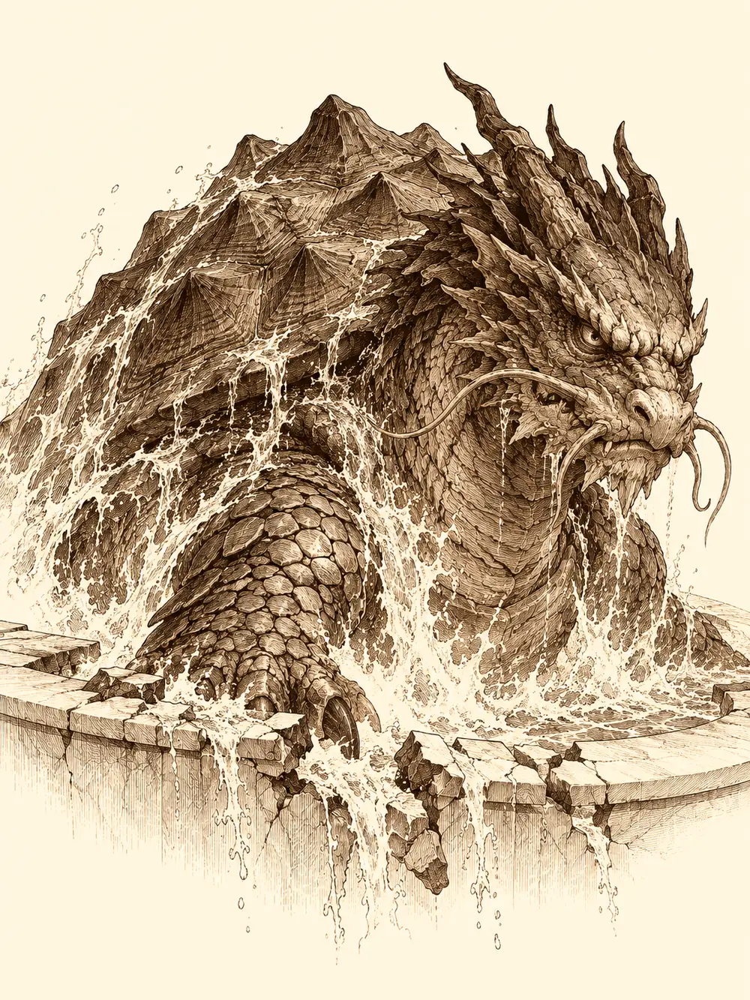

Capítulo 146
Juegos en el balneario
Libro IX · Mareas y muertos
Los guardias de la puerta del palacio ya conocían a Guxi y lo dejaron pasar con una reverencia. En la sala principal los cónsules seguían enterrados en papeles, como siempre, y una sirvienta subió a avisar a la shogun. Calista bajó a los pocos minutos, abrochándose algo por encima de un traje que no tenía intención de enseñar en la calle.
Guxi le dio el informe sin rodeos. La piedra de comunicación del campamento del sur estaba terminada, y también las de Ukio y la base de los cazadores; solo faltaba la de palacio, que le llevaría uno o dos días. Luego le contó lo del templo del oeste.
"Los guardianes no son buenos ni malos. Son fuerzas de la naturaleza. No nos van a ayudar. No puedes pedirle al volcán que deje de entrar en erupción ni a la tormenta que pare".
Calista tensó la mandíbula.
"Entonces solo nos queda defendernos por nosotros mismos". Se quedó un momento callada. "¿Y lo de los puertos? ¿Has pensado en algo?".
Guxi se tocaba el dedo donde antes llevaba el anillo, sin darse cuenta. Calista lo vio y no dijo nada; esperó a que fuera él quien lo dijera.
"Tengo algo, pero últimamente no soy capaz de concentrarme. Las cosas no van bien, Calista".
"Ya veo". Apretó los labios hasta dejarlos en una línea. "Mira, sé que no es buen momento, pero lo del puerto lo necesito con urgencia. Cuanto más tiempo pase, más mercenarios y más gente de esa ciudad con la que firmamos los tratados se nos colará en Kuroto. No te pido que sea mañana. Te pido que lo hagas".
Ella misma andaba con más preocupaciones de las que le cabían en la cabeza. Había bajado a las alcantarillas con Gelbreak y había visto allí hombres rata y otras presencias que prefería no recordar antes de dormir, y una discusión con su guardián, nacida de los celos y de su miedo a no estar a la altura en un combate, había terminado bien solo porque Banzo había tenido el buen juicio de meterse en medio. Hoy quería salir del palacio aunque fuera unas horas.
"Voy a la zona del puerto. Quizá te venga bien para despejarte. A mí me ayuda centrarme en el trabajo cuando estoy mal".
"No me viene mal el aire fresco".
Gelbreak los esperaba al pie de la escalera con cara de no haber sido informado de que tendrían compañía. Calista se le acercó y le susurró que le había dicho que los acompañara al puerto, no que entrara exactamente adonde iban. De camino, entró en la tienda del alquimista y le compró a Gelbreak un anillo mágico, porque la otra vez le había hecho él un regalo y ahora le tocaba a ella. Gelbreak sacó a su vez unos guantes de la mochila. Calista los miró, abrió mucho los ojos y supo enseguida para qué eran.
En el muelle, frente al mar, Serafina miraba una plataforma lejana que brillaba como un circo, con luces de colores y petardos que reventaban sobre el agua. Un hombre con cabeza de gato y ropas de seda pregonaba en el embarcadero las maravillas de aquel lugar. Era el Spa de las Maravillas, decía, el mejor disfrute y la relajación perfecta.
Serafina se había levantado decidida a pensar en otra cosa antes de hacer una locura. La víspera había tenido a Guxi a dos pasos durante toda una misión y él no le había dirigido la palabra. Se acercó al hombre gato. Él sacó un péndulo y empezó a balancearlo ante sus ojos.
"Algo no me hace confiar en usted".
"Si no mira el péndulo, no puedo llevarla, señorita".
Serafina lo agarró de la pechera.
"A ver, pedazo de imbécil. Más te vale que me dejes ir a ese sitio. Tengo muy mala leche ahora mismo y lo que menos te conviene es un puñetazo".
El hombre gato se apartó con mucho cuidado, le soltó los dedos uno a uno y, con la mano temblorosa, volvió a balancear el péndulo. Le juró que era un portal, que la llevaría hasta allí. Serafina le advirtió que, si era un truco barato, le saldría muy caro. Lo miró. Alrededor de ella empezaron a saltar chispas diminutas y desapareció en un parpadeo.
Calista y Gelbreak, que llegaban detrás, se miraron. Las ropas del pregonero no eran de Kuroto. Calista las reconoció como ropas del desierto de Amnem y decidió que, ya puestos a relajarse, se relajarían investigando. Guxi pidió ir al balneario y desapareció también. Gelbreak se volvió hacia el hombre gato y le habló con una suavidad que daba más miedo que un grito.
"Tú, cara de gato, llévanos".
Aparecieron en un recinto de mármol blanco, impecable, con dos leones de piedra que se escupían agua el uno al otro desde los extremos de una fuente. Había una gran piscina de agua cristalina con un tono verdoso, como si tuviera sales para la piel, y otras dos más pequeñas, una caliente y otra fría. Bancos de masaje, mesitas para dos con fruta fresca y copas, sirvientas que bailaban al pasar y, al fondo, una puerta con un letrero que prometía una zona especial. Dejaron las armaduras y las armas en los vestuarios. Gelbreak metió las suyas en la bolsa, por si acaso.
El hombre gato del muelle estaba también allí dentro. Se presentó como Racterion, el encargado, y parecía estar en todas partes a la vez. Cuando Calista y Serafina se cruzaron con él en un pasillo y luego otra vez en el siguiente, él mismo se dividió en dos ante sus ojos para atenderlas mejor. A Calista no le gustó, pero tampoco le pareció una prueba de nada.
Las dos mujeres se apartaron juntas. Serafina no quería ver a Guxi, y Calista quería pasar un rato con su amiga, investigar y, de paso, darle espacio.
En la sauna, envueltas en vapor, con Fukami roncando a pierna suelta en un banco, Serafina le contó a Calista que había conocido a alguien. Un forastero muy amable, con un nombre extraño que no recordaba porque estaba muy borracha. La había ayudado a llegar a la base y le había regalado una flor del mar.
"¿Y cómo de amable fue?".
Serafina se puso roja, y no por el calor. Calista entornó los ojos.
"Espera, no me digas que tú y el hombre que conociste anoche ya habéis...".
"No, no, no. Para nada. Digamos que solo lo soñé".
Calista abrió mucho los ojos. Serafina añadió que Kurobane también la había ayudado: le había prestado su cama y él había dormido en la mesa.
"¿Kurobane también?".
"No hubo nada. Con el único que he tenido contacto así, últimamente, es con Guxi. Ni Kurobane ni esa nueva persona".
"Pues tienes un buen abanico de opciones. Yo te diría que pensaras qué rumbo quieres tomar". Calista se apartó el pelo de la frente; el sudor le caía por las sienes. "Kurobane es un poco sentimental. E inestable. Una vez estuvo enamorado de mí".
Serafina contó entonces lo que la tenía en vela. Guxi había dicho que ojalá hubiera sido él el que se casaba con su hermanastra, y ella no paraba de pensar en lo que ocurriría cuando la tuviera delante, en el altar, en carne y hueso. Si una simple letra le había despertado aquello, ¿qué haría al verla?
"¿Quieres que te sea sincera?".
"Suéltamelo".
"Si Gelbreak me hiciera eso, probablemente lo mataría a él y a la otra. No me sentiría bien estando con alguien que tiene sentimientos por otra persona. Me tengo el cariño suficiente como para no aceptar un corazón que no es del todo mío".
Cuando Fukami se marchó, desnuda y dándoles una palmada en el hombro a cada una, Calista se levantó a cerrar la puerta y la toalla se le movió. Serafina vio en la parte baja de su vientre una cicatriz enorme, hundida, de las que deforman la carne alrededor. Era la marca de una herida que debería haber sido mortal.
"Ah. Esto no fue Gelbreak". Calista se volvió a colocar la toalla y apoyó la mano encima. "Antes has dicho que hablaste con Danifae. Te voy a dar un consejo, y te lo doy porque lo he sufrido en carne propia. No te fíes de ella. Cada dos palabras que suelta, una es mentira. Me apuñaló en el bosque, después de que yo ayudara a Gur con su maestro, y casi me desangro allí mismo. También amenazó a Arwen. Quiero llevarla a juicio, tengo pruebas, pero aún no es el momento. Si alguna vez te contó algo, no le creas ni la mitad. Esa mujer es tan retorcida como las arañas".
Poco después el calor terminó de secar a la tritón, que empezó a marearse. Serafina la sacó casi en volandas hasta la piscina fría, donde Gelbreak flotaba con un cóctel en la mano y unas gafas pequeñas de nadar en la frente, y la metió en el agua. Calista se hundió como una piedra y salió resoplando, recuperando el color azul de siempre.
Guxi, por su parte, había acabado en la sauna con Nori, un noble que le propuso ver quién aguantaba más el calor y le preguntó, por pasar el rato, a qué se dedicaba. Guxi le contó que había trabajado como administrativo en el shogunato y que lo habían echado por errores que no eran suyos. Entonces no había podido demostrarlo. Ahora tenía las pruebas, había recuperado su sitio en los cazadores y no pensaba volver al puesto de antes aunque la mismísima shogun se lo ofreciera. Nori fue el primero en rendirse. Le lanzó una bolsa con ciento cincuenta monedas y salió a respirar.
Las dos amigas, entretanto, se hicieron arreglar las uñas y recibieron cada una un sombrero de ala ancha que protegía del sol. Gelbreak se tomó un cóctel que, según el camarero, permitía hablar y respirar bajo el agua. Y luego Calista y Serafina se pusieron a competir bebiendo, trago tras trago, hasta que la tritón empezó a balancearse con una elegancia de borracha que no perdía las formas. Ganó Serafina, aunque ninguna de las dos lo recordaría con claridad.

En la piscina grande estaba Nomi, el joven de verde, rodeado de mujeres. Serafina quería humillarlo hasta que no se atreviera a salir de casa. Calista le dijo que la tapara, lo miró fijamente y le encogió el bañador. Nomi se levantó de golpe con un gemido y salió de la piscina con las manos donde pudo. Luego fueron a por Gelbreak, que estaba debajo del agua; él las detectó, se volvió invisible, ellas lo encontraron igual y terminaron haciéndole cosquillas entre las dos hasta que el drow, entre risas, les suplicó que pararan. Intentó detener a Serafina con una orden y ella la resistió sin pestañear.
Guxi se acercó a la piscina.
"Serafina, ¿podemos hablar, por favor?".
Salieron del agua. Calista y Gelbreak se apartaron a otro lado. Serafina se quedó de pie frente a él, mojada, borracha y con los brazos cruzados.
"No quiero sentarme. Quiero estar delante de ti".
"Cuando tenía seis años, mi madre me abandonó", empezó Guxi. "Mi padre nunca estaba en casa. Venía una vez al año, a veces con un hermano o una hermana nuevos, siempre con una madre diferente. El único que se portó conmigo como un padre fue mi maestro. Cuando tenía dieciséis años, mi padre trajo a dos más, un chico y una chica. Son los que se van a casar ahora. Ella fue mi primer amor. No me correspondió; prefirió al otro. Cuando leí la carta, me acordé de aquella época, que aunque acabó mal también tuvo cosas bonitas. Pero yo ya no la quiero. Hace mucho que pasé de eso".
Le temblaba la voz.
"Cada vez que he sido feliz con algo, lo he perdido. Siempre lo estropeo. Y cuando encontré lo mejor que me había pasado nunca, también lo alejé. Eres la mujer que quiero. La luz que me hace despertarme cada mañana. Llegaste en el peor momento de mi vida. He estado bebiendo, buscando en cada botella el sabor que compartíamos, y no lo encuentro. Si no quieres volverme a ver, lo entenderé. Pero quería ser sincero contigo".
Serafina escuchó con la mandíbula apretada. El alcohol le hacía oír solo lo que dolía.
"Me estás diciendo que no sientes esas palabras. Pero cuando viste la invitación se te ocurrió decir ojalá. Si tantas ganas tienes de estar con ella, haberte ido. No nos habríamos hecho perder el tiempo. Tú deberías saber lo que es que te usen, que te aparten. ¿No lo sentiste con tu padre? Yo ni recuerdo a los míos. Y aun así iba con la frente en alto, y fuiste tú el único que me consiguió destrozar. Te enseñé lo más vulnerable de mí. Te enseñé que me sentía inútil. Y ahora resulta que tu corazón no me pertenece".
Guxi dio un paso hacia ella.
"No te atrevas a acercarte".
"Antes de conocerte me apunté un arma a la cabeza. No le veía color a la vida. Te querré aunque me odies".
"Ese es el problema. Que no te odio. Jamás odiaría a quien le entregué el corazón. Pero ¿qué va a pasar cuando la veas? ¿Vas a correr a sus brazos?".
"Le demostraré que eres la única".
"Te lo di todo, Guxi. Te juro que te lo di todo. Y ahora ya no sé si las palabras de Danifae son ciertas, si puedo confiar en vosotros. Ya no sé si puedo confiar en ti". La voz se le quebró. "Te sigo queriendo. Pero necesito pensarlo. Este dolor es muy grande. No puedo darte ni un sí ni un no".
Guxi asintió.
"Esperaré".
Ella dio media vuelta hacia los vestuarios, y en ese momento el suelo empezó a temblar.
El agua de la piscina grande se rizó en círculos concéntricos, como la superficie de un vaso cuando algo enorme se acerca, y luego empezó a burbujear entera. Calista, colgada todavía del brazo de Gelbreak, dejó de reírse. De debajo del agua emergió una tortuga dragón gigantesca que reventó el borde de mármol y se quedó mirándolos con unos ojos que no tenían nada de amistosos.
Los habían pillado en bañador. Serafina corrió a los vestuarios a por sus vendas. Gelbreak se rodeó de copias de sí mismo que confundían a la bestia y animó a los demás con palabras que les endurecían el pulso. Guxi levantó sus torretas. Calista, que aún veía doble, se transformó en un dragón de agua y se lanzó al combate con más entusiasmo que puntería.
La tortuga escupía fuego. Cada aliento barría la piscina y dejaba la piel de todos enrojecida y humeante. Calista le metió en la cabeza una reprimenda mágica que la dejó aturdida y le respondió con su propio aliento de agua; las copias de Gelbreak se deshacían una tras otra y él seguía en pie. Guxi miró a Serafina, que entraba y salía del alcance del monstruo a saltos, y tomó una decisión: la envolvió en una magia que la hacía más rápida. Confiaba en ella. Serafina golpeó más veces de las que nadie podría haber contado, y se apartaba antes de que el fuego la alcanzara.
Fue una de las torretas de Guxi la que disparó el último golpe. La tortuga se estremeció, se hundió hacia el fondo y desapareció en el mar, muerta. Calista quiso tirarse detrás para hacerla trocitos. Gelbreak la agarró de la cola, le dijo que parara, y como ella no paraba le cogió las mejillas y la besó debajo del agua, que era la manera más eficaz de calmarla que conocía.
Guxi se acercó a Serafina, que sangraba por varios sitios.
"Déjame curarte, por lo menos".
"Haz lo que creas conveniente. Yo no te voy a decir qué hacer".
Él le cerró las heridas. Ella se dejó, y no le prometió nada.
Racterion llegó cuando ya todo había terminado, miró los destrozos y se llevó las manos a la cabeza. Otra tortuga gigante de esas, se lamentó. Siempre le aparecían. Tendría que contratar a alguien para el control de plagas. Se puso a limpiar la sangre del mármol mientras ellos recogían sus cosas en los vestuarios.
En los muelles, Calista, borracha y feliz, propuso irse de tabernas en vez de volver al trabajo. Invitó a Serafina.
"No, gracias. Necesito respirar un poco, después de la pelea y de lo otro".
Calista y Gelbreak se fueron calle arriba. Serafina los siguió unos pasos por detrás, despacio, triste. Más atrás todavía, con la cabeza gacha, iba Guxi, que había prometido esperar y esperaba.
En el refugio del sur, Kurobane intentó coger las vendas y casi se cae otra vez. Serafina recogió con disimulo el libro que se le había caído y se curaron el uno al otro. Ella le atendió la espalda mientras hablaban de cicatrices y de dolor. Luego él la invitó a un juego de armas y le corrigió la postura con el estoque. Entre esquivas y risas, Serafina lo desarmó y le trazó con la punta una ese muy superficial en el pecho. Kurobane le confesó que desearía quedarse con ella toda la vida. Ella no le prometió lo mismo; acababa de pasar por algo importante y necesitaba pensar. Lo ayudó a levantarse y volvió a la base.
Aquella tarde, un carruaje negro con detalles rojizos se detuvo ante la base. El cochero venía a recoger a Serafina para cenar con Alister. Banzo, que sospechó al principio que era cosa de Guxi, le dijo que no estaba y lo dejó esperando. Cuando ella volvió del puerto, Archi, con su perro Frank al lado, le transmitió en la mente un recado de Banzo: si necesitaba ayuda, que cogiera la piedra que le había metido en el bolsillo y dijera las palabras acordadas. Serafina abrazó al gnomo, recogió la piedra con disimulo y subió al carruaje. Dentro la esperaban un ramo de flores del mar, un vestido y una nota. Mientras el coche se alejaba, un pequeño autómata salió de su invisibilidad junto a Archi, y el gnomo informó a Banzo por la caracola de que el localizador estaba colocado.
Igor, el cochero, la llevó al reservado de un restaurante lujoso del barrio rico. Alister la recibió admirando el vestido, le sirvió un vino con aroma de fruta en el que ella no notó nada raro y le dijo que había venido a Kuroto por curiosidad, porque una isla que se abre tras siglos de aislamiento es algo que no se ve dos veces. Él no comió; había cenado antes, dijo, de puro nervioso. Bailaron. Él la llevaba con soltura y ella se sintió atraída y nerviosa a la vez. Serafina le habló del pirata que la había criado, que comerciaba con mujeres y las maltrataba, y Alister le respondió que sus orígenes no definían quién era. La devolvió en carruaje a la base. En la puerta, ella le dio un beso breve en los labios.
Mientras tanto, Banzo había ido a disculparse ante Tiari por no haberla dejado colaborar con ellos. Ella lo aceptó sorprendida y le contó que, a su juicio, la droga entraba por la apertura del shogunato al exterior y por sus contactos en Puerto de las Espadas. Banzo le advirtió que los cazadores quizá entrarían bajo el barrio y le pidió que cuidara de Arwen; Tiari le aseguró que mandaba tres hombres a protegerla cada vez que la niña entraba en su territorio. Banzo bromeó con que harían falta otros tres para proteger a los primeros.
De camino al taller, una mujer llorando se le agarró al brazo pidiendo ayuda, hasta que un virote le atravesó la cabeza. Banzo se cubrió y, con su magia, vio cómo la víctima se incorporaba con los ojos rojos y los colmillos fuera, y cómo una cazadora pelirroja la decapitaba, le arrancaba los colmillos y le atravesaba el corazón hasta convertirla en polvo. Era Verbin. Banzo le pidió que le enseñara a matar a esas criaturas antes de bajar con ella y con Gelbreak. Ella se burló de su mano ausente, de su poca preparación, pero la terquedad del goliat acabó convenciéndola. Le dijo que reuniera al grupo y se fue.
En el palacio, a la luz de una lámpara, Guxi terminó la piedra de comunicación después de un día y una noche sin dormir. Dejó sobre la mesa unas instrucciones para Calista y los generales, recogió sus herramientas con los ojos rojos de cansancio y salió a tomar el aire.